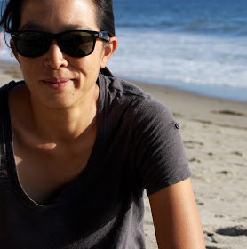

Lauren ChanAssistant Professor, BiologyPacific University Office: Strain 311 | Phone: 503-352-1469 Email: lchan at pacificu.edu |
 |
I'm interested in the evolution and conservation of biological diversity. A lot of my research strives to understand the processes underlying patterns of diversity and differentiation in amphibians and reptiles. I collaborate with students, government agencies, and colleagues at other universities and institutions on projects throughout western North America. At Pacific, I teach courses across the biology curriculum including introductory biology, vertebrate zoology, evolution, molecular ecology, and advanced research methods.
Opportunities to Get Involved!
I'm always interested in collaborating with excited, motivated students in research. If you want to learn more about the specific research projects in the lab, first check out the research page and then contact me or stop by my office. Opportunities range from joining us in fieldwork, collaborating on particular projects, to conducting research with me in the Advanced Research Methods course.